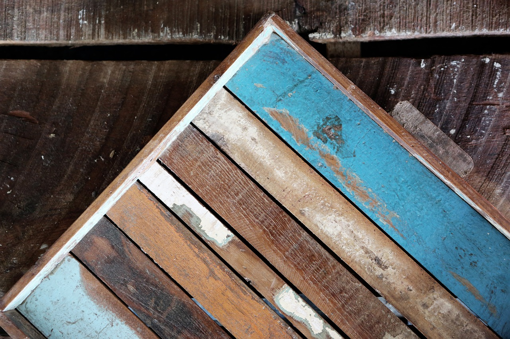

For the Love of Wood

Everyone has a story. Ours began when two friends in Texas discovered they shared a passion for art, music, and woodworking. Raleigh Morris and Chas Foreman decided to make high-quality, beautiful furniture and decor affordable. You won't find boutique prices on flea market finds here. We believe people should have durable, functional, and lovely furniture.
Each piece has its own story. When you buy an Oak & Hatchet piece full of character - whether it's a dining table top reclained from an old Texas barn, or a seven-layer milk paint finish - you'll be asked by friends and family to share the story.
The products featured here represent only part of our offering. If you have a vision of something entirely new, we invite you to talk to us. We'll work with you to make sure you get the exact look, feel and function you have in mind.